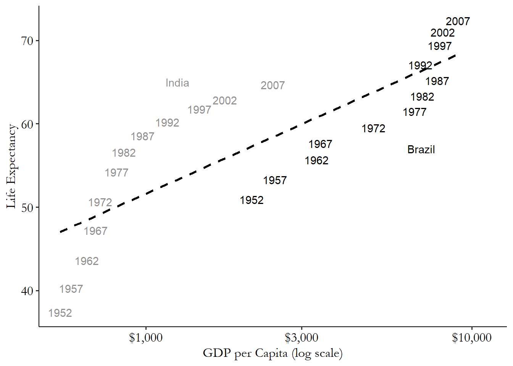
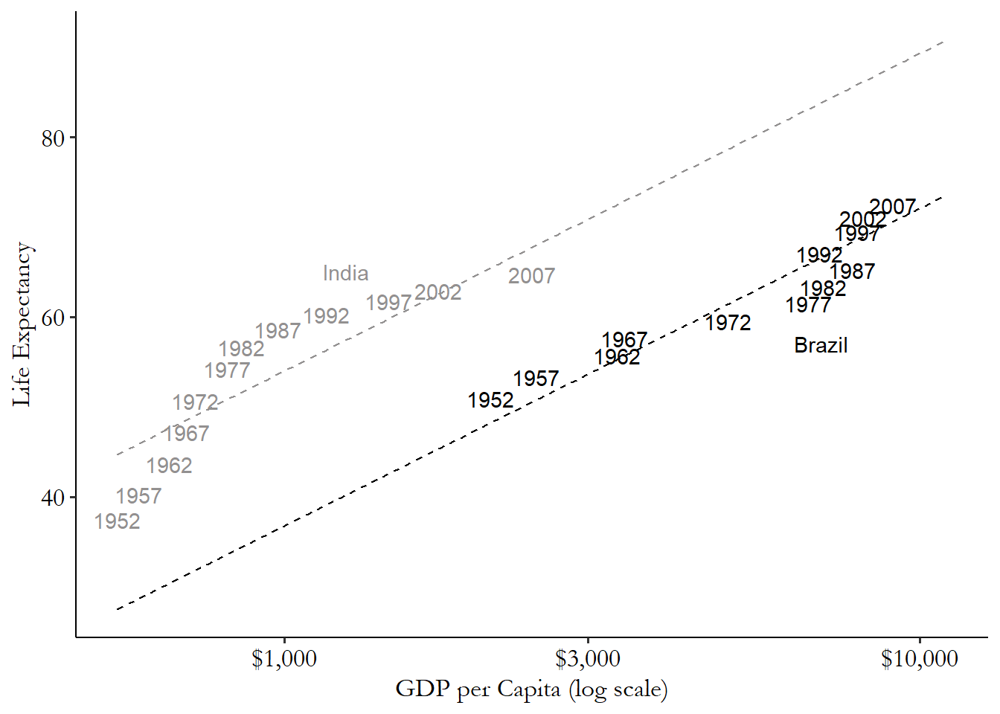

library(tidyverse); library(modelsummary)
gm <- causaldata::gapminder
gm <- gm %>%
# Put GDP per capita in log format since it's very skewed
mutate(log_GDPperCap = log(gdpPercap)) %>%
# Perform each calculation by group
group_by(country) %>%
# Get within variation by subtracting out the mean
mutate(lifeExp_within = lifeExp - mean(lifeExp),
log_GDPperCap_within = log_GDPperCap - mean(log_GDPperCap)) %>%
# We no longer need the grouping
ungroup()
# Analyze the within variation
m1 <- lm(lifeExp_within ~ log_GDPperCap_within, data = gm)
msummary(
m1,
stars = c('*' = .1, '**' = .05, '***' = .01),
gof_map = list(
list(raw = "nobs", clean = "Num. Obs.", fmt = 0),
list(raw = "r.squared", clean = "R2", fmt = 3)
)
)Causal Inference Methods for Policy Evaluation
5-Panel Data
Jacopo Mazza
Utrecht School of Economics
2026
Data Structure
Possible Data Structures
Cross-Section Data
Observations of multiple entities at a single point in time.
Time-Series Data
Observations of a single entity across multiple time periods.
Repeated Cross-Section Data
Observations of different entities at multiple points in time.
Panel Data
Observations of the same entities across multiple time periods.
The Pros and Cons of Panel Data
Pros
Control for unobserved heterogeneity if the unobserved factor does not change with time (is time invariant).
Can study the dynamics of the relationship between variables.
Cons
- Requires consistent data collection over time.
- More complex to analyze.
- Does not address time-varying unobserved heterogeneity.
Panel Data Estimators
The 3 Panel Data Estimators
The basic regression model for panel data is:
\[ Y_{it} = \delta D_{it} + u_i + \varepsilon_{it}, \quad t=1,2,\dots, T \] Note:
Subscripts: \(i\) and \(t\) denote the entity and time period, respectively.
\(u_i\) is the person specific unobserved heterogeneity.
Pooled OLS: The simplest estimator, it pools all the data and estimates a single OLS regression.
Random Effects: Assumes that the unobserved heterogeneity is uncorrelated with the observed variables.
Fixed Effects: Controls for unobserved heterogeneity by including a dummy variable for each entity.
Pooled OLS
Simple idea: ignore the panel structure and estimate a single OLS regression.
\[ Y_{it} = \delta D_{it} + \eta_{it} \quad t=1,2,\dots, T\]
- with \(\eta_{it} = u_i + \varepsilon_{it}\)
- Main assumption: \(E(\eta_{it} | D_{it}) = 0\)
- This assumption is violated if \(u_i\) is correlated with \(D_{it}\).
- Would this assumption hold when estimating the effect of education on income?
Inference in Pooled OLS
The standard errors in Pooled OLS are too small because they do not account for the panel structure.
Serial correlation: Observations within the same entity are likely to be correlated, but to be consistent POLS assumes: \(\text{Cov}(\varepsilon_{it}, \varepsilon_{it+1}) = 0\).
Heteroskedasticity: The variance of the error term may vary across entities and time periods.
Solution \(\Longrightarrow\) Clustered Standard Errors.
Clustered Standard Errors
Assume that clusters are randomly drawn from a larger population
Assume that the error term is correlated within the same entity \(i\).
Available in most statistical software.
Random Effects (RE)
Random effects treats \(u_i\) as a random variable with known distribution (e.g. normal).
Key assumption: \(u_i\) is uncorrelated with the observed variables \[\text{Cov}(D_{it}, u_i) = 0, \quad t=1,2,\dots,T\].
RE uses the within and between variation to estimate the effect.
RE can estimate coefficients of both time variant and invariant regressors.
Is the random effects assumption realistic?
Fixed Effects Estimation
Fixed Effects
Fixed effects accounts for all variables, observed or not, as long as they stay constant within some larger category.
You can estimate Fixed effects by:
- Controlling for units (i.e.: person, company, school, country, year etc.) by including a dummy variable for each unit.
- transforming the model by demeaning it. (i.e.: subtracting the mean of each unit from the variable).
Fixed effects uses the within-unit variation to estimate the effect.
All between-unit variation is removed.
Fixed Effects Simple Example
| Individual | Year | Exercise |
|---|---|---|
| You | 2022 | 5 |
| You | 2023 | 7 |
| Me | 2022 | 4 |
| Me | 2023 | 3 |
We want to estimate the effect of exercising on getting a cold.
We suspect that genetics might play a role in getting a cold.
Genetics are constant within each individual.
We can control for genetics by including a dummy variable for each individual and only use the variation in exercise within each individual.
Fixed Effects Simple Example
| Individual | Year | Exercise | Mean Exercise | Within Exercise |
|---|---|---|---|---|
| You | 2019 | 5 | 6.0 | -1.0 |
| You | 2020 | 7 | 6.0 | 1.0 |
| Me | 2019 | 4 | 3.5 | 0.5 |
| Me | 2020 | 3 | 3.5 | -0.5 |
We calculate the mean exercise for each individual.
We calculate the within exercise by subtracting the mean exercise from the exercise.
We can estimate the effect of within exercise on getting a cold keeping constant the individual fixed effects.
The difference between individuals in the means is the between variation.
Fixed Effects Estimation with Dummies
Our panel data model with fixed effects can be written as: \[ Y_{it} = \delta D_{it} + \sum_{i=2}^{N}\gamma_i d_i + \eta_{it} \]
Here \(d_{i}\) is a dummy variable for each entity (i.e.: person, company, school, country, year etc.).
Feasible for a small number of entities.
Cannot include variables that do not vary within the entity.
Visualizing Fixed Effects with Dummies


Fixed Effects Estimation with Demeaning
Instead of including dummy variables, we can transform the model by demeaning it.
We subtract the mean of each entity from the variable:
- \(Y_{it} - \overline{Y}_{i} = \delta (D_{it} - \overline{D}_{i}) + (\eta_{it} - \overline{\eta}_i)\)
It is equivalent to including a dummy variable for each entity.
This is called the within transformation.
All time-invariant factors observed and not observed are removed.
The within transformation is consistent even if \(Cov(D_{it}, u_i) \neq 0\).
Identifying Assumption:
- \(E(\eta_{it} | D_{it}, u_i) = 0\) \(\leftarrow\) strict exogeneity
Estimating the Within Model in R
| (1) | |
|---|---|
| * p < 0.1, ** p < 0.05, *** p < 0.01 | |
| (Intercept) | -0.000 |
| (0.123) | |
| log_GDPperCap_within | 9.769*** |
| (0.284) | |
| Num. Obs. | 1704 |
| R2 | 0.410 |
Fixed Effects in Practice: feols
library(tidyverse); library(modelsummary); library(fixest)
gm <- causaldata::gapminder
# feols: absorb country FE, cluster SEs at country level
m2 <- feols(lifeExp ~ log(gdpPercap) | country,
cluster = ~country, data = gm)
# Compare within (OLS, for illustration) vs feols (clustered SEs)
msummary(
list("Within (illustrative)" = m1, "feols (clustered SE)" = m2),
stars = c('*' = .1, '**' = .05, '***' = .01),
coef_map = c(
"log_GDPperCap_within" = "log GDP per Capita",
"log(gdpPercap)" = "log GDP per Capita"
),
gof_map = list(
list(raw = "nobs", clean = "Num. Obs.", fmt = 0),
list(raw = "r.squared", clean = "R2", fmt = 3)
)
)| Within (illustrative) | feols (clustered SE) | |
|---|---|---|
| * p < 0.1, ** p < 0.05, *** p < 0.01 | ||
| log GDP per Capita | 9.769*** | 9.769*** |
| (0.284) | (0.702) | |
| Num. Obs. | 1704 | 1704 |
| R2 | 0.410 | 0.846 |
FE Example: The Returns to Marriage
What’s the causal effect of marriage on earnings?
- Married men earn more than single men.
Is this causal? If not, why not?
Cornwell and Rupert (1997) use panel data to estimate the effect of marriage on earnings.
They estimate the following model: \[ \log(wage_{it}) = \alpha + \delta M_{it} + \beta X_{it} + A_i + \gamma_t + \varepsilon_{it} \]
FE Example: The Returns to Marriage
Table 8.2: Estimated Wage Regressions
| Dependent Variable | FGLS | Within | Within | Within |
|---|---|---|---|---|
| Married | 0.083 | 0.056 | 0.051 | 0.033 |
| (Standard errors) | (0.022) | (0.026) | (0.026) | (0.028) |
| Education controls | Yes | No | No | No |
| Tenure | No | No | Yes | Yes |
| Quadratics in years married | No | No | No | Yes |
Standard errors in parentheses.
Multiple Fixed Effects
- If we observe individuals over time we can include multiple fixed effects in the model. E.g.:
- Individual fixed effects -> variation within individual
- Time fixed effects -> variation within year
- This is called a two-way fixed effects model: \[ Y_{it} = \delta D_{it} + u_i + \lambda_t + \eta_{it} \]
What’s the variation left?
Example: Two-Way Fixed Effects
| Person | Normal Earnings | 2009 Earnings | Deviation from Normal | Explanation |
|---|---|---|---|---|
| Average Person | €40,000 | €30,000 | -€10,000 | In 2009, earnings are €10k below normal due to the recession |
| Bas | €120,000 | €116,000 | -€4,000 | Bas loses only €4k instead of €10k, so he’s €6k above the “expected” 2009 drop |
Choosing Between FE and RE: The Hausman Test
- Both FE and RE are consistent when \(\text{Cov}(D_{it}, u_i) = 0\).
- Only FE is consistent when \(\text{Cov}(D_{it}, u_i) \neq 0\).
- The Hausman test compares FE and RE estimates:
- \(H_0\): \(\text{Cov}(D_{it}, u_i) = 0\) — RE is consistent and efficient.
- \(H_1\): \(\text{Cov}(D_{it}, u_i) \neq 0\) — RE is inconsistent; use FE.
- If \(H_0\) is rejected, use FE. If not rejected, RE is preferred (more efficient).
Cautionary Note on Fixed Effects
Cannot use fixed effects to estimate the effect of time-invariant variables.
Fixed effect cannot resolve reverse causality and simultaneity.
Fixed effects cannot address time-variant unobserved heterogeneity.
Summary
- Panel data allow us to control for time-invariant unobserved heterogeneity.
- Pooled OLS ignores the panel structure → biased if \(\text{Cov}(D_{it}, u_i) \neq 0\).
- Random Effects assumes \(\text{Cov}(D_{it}, u_i) = 0\) → more efficient but restrictive.
- Fixed Effects removes all time-invariant confounders via demeaning → consistent even when \(\text{Cov}(D_{it}, u_i) \neq 0\).
- Use the Hausman test to choose between FE and RE.
- Panel methods do not solve time-varying confounding or reverse causality.